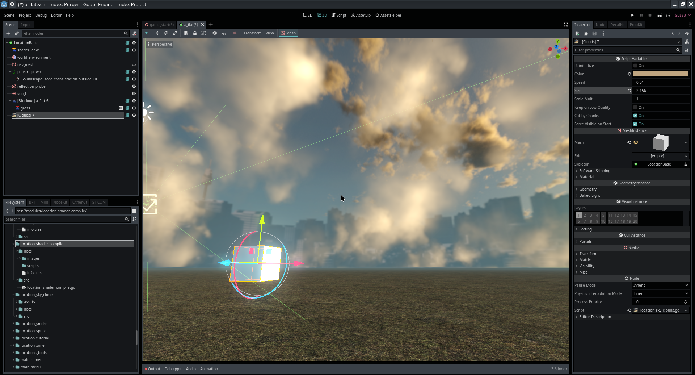

Module: location_sky_clouds
Documentation last edited: October 23, 2025 at 14:33 UTC
Description
LocationSkyClouds
, как и говорится, создаёт облака, которые довольно далеко от игрока.

Их тупо легко использовать: ты просто добавляешь
LocationSkyClouds
и настраиваешь его параметры по своему вкусу. Нет особых случаев, которые требовали бы какого-либо описания, они просто есть.
General Information
Root directories list
assets, docs, src
Nodes
Classes
None
Resources
None
Other Scripts
None